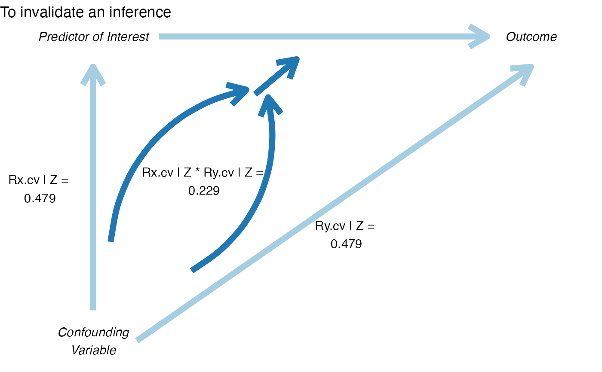

For published studies, this command calculates (1) how much bias there must be in an estimate to invalidate/sustain an inference; (2) the impact of an omitted variable necessary to invalidate/sustain an inference for a regression coefficient.
pkonfound( est_eff, std_err, n_obs, n_covariates = 1, alpha = 0.05, tails = 2, nu = 0, n_trm = NULL, switch_trm = TRUE, non_linear = FALSE, to_return = "print" )
Arguments
| est_eff | the estimated effect (such as an unstandardized beta coefficient or a group mean difference) |
|---|---|
| std_err | the standard error of the estimate of the unstandardized regression coefficient |
| n_obs | the number of observations in the sample |
| n_covariates | the number of covariates in the regression model |
| alpha | probability of rejecting the null hypothesis (defaults to 0.05) |
| tails | integer whether hypothesis testing is one-tailed (1) or two-tailed (2; defaults to 2) |
| nu | what hypothesis to be tested; defaults to testing whether est_eff is significantly different from 0 |
| n_trm | the number of cases associated with the treatment condition; applicable only when non_linear = TRUE |
| switch_trm | whether to switch the treatment and control cases; defaults to FALSE; applicable only when non_linear - TRUE |
| non_linear | whether the model is a non-linear model; defaults to FALSE |
| to_return | whether to return a data.frame (by specifying this argument to equal "raw_output" for use in other analyses) or a plot ("plot"); default is to print ("print") the output to the console; can specify a vector of output to return |
Value
prints the bias and the number of cases that would have to be replaced with cases for which there is no effect to invalidate the inference
Examples
pkonfound(2, .4, 100, 3)#> Percent Bias Necessary to Invalidate the Inference: #> To invalidate an inference, 60.3% of the estimate would have to be due to bias. This is based on a threshold of 0.794 for statistical significance (alpha = 0.05). #> To invalidate an inference, 60 observations would have to be replaced with cases for which the effect is 0. #> See Frank et al. (2013) for a description of the method #> Citation: Frank, K.A., Maroulis, S., Duong, M., and Kelcey, B. 2013. What would it take to change an inference? Using Rubin's causal model to interpret the robustness of causal inferences. Education, Evaluation and Policy Analysis, 35 437-460. #> Impact Threshold for a Confounding Variable: #> The minimum impact to invalidate an inference for a null hypothesis of 0 effect is based on a correlation of 0.568 with the outcome and at 0.568 with the predictor of interest (conditioning on observed covariates) based on a threshold of 0.201 for statistical significance (alpha = 0.05). #> Correspondingly the impact of an omitted variable (as defined in Frank 2000) must be 0.568 X 0.568 = 0.323 to invalidate an inference for a null hypothesis of 0 effect. #> See Frank (2000) for a description of the method #> Citation: Frank, K. 2000. Impact of a confounding variable on the inference of a regression coefficient. Sociological Methods and Research, 29 (2), 147-194#>#>pkonfound(-2.2, .65, 200, 3)#> Percent Bias Necessary to Invalidate the Inference: #> To invalidate an inference, 41.732% of the estimate would have to be due to bias. This is based on a threshold of -1.282 for statistical significance (alpha = 0.05). #> To invalidate an inference, 83 observations would have to be replaced with cases for which the effect is 0. #> See Frank et al. (2013) for a description of the method #> Citation: Frank, K.A., Maroulis, S., Duong, M., and Kelcey, B. 2013. What would it take to change an inference? Using Rubin's causal model to interpret the robustness of causal inferences. Education, Evaluation and Policy Analysis, 35 437-460. #> Impact Threshold for a Confounding Variable: #> The minimum impact to invalidate an inference for a null hypothesis of 0 effect is based on a correlation of 0.334 with the outcome and at 0.334 with the predictor of interest (conditioning on observed covariates) based on a threshold of -0.14 for statistical significance (alpha = 0.05). #> Correspondingly the impact of an omitted variable (as defined in Frank 2000) must be 0.334 X 0.334 = 0.112 to invalidate an inference for a null hypothesis of 0 effect. #> See Frank (2000) for a description of the method #> Citation: Frank, K. 2000. Impact of a confounding variable on the inference of a regression coefficient. Sociological Methods and Research, 29 (2), 147-194#>#>pkonfound(.5, 3, 200, 3)#> Percent Bias Necessary to Invalidate the Inference: #> To sustain an inference, 91.549% of the estimate would have to be due to bias. This is based on a threshold of 5.916 for statistical significance (alpha = 0.05). #> To sustain an inference, 183 of the cases with 0 effect would have to be replaced with cases at the threshold of inference. #> See Frank et al. (2013) for a description of the method #> Citation: Frank, K.A., Maroulis, S., Duong, M., and Kelcey, B. 2013. What would it take to change an inference? Using Rubin's causal model to interpret the robustness of causal inferences. Education, Evaluation and Policy Analysis, 35 437-460. #> Impact Threshold for a Confounding Variable: #> The maximum impact to sustain an inference for a null hypothesis of 0 effect is based on a correlation of 0.335 with the outcome and at 0.335 with the predictor of interest (conditioning on observed covariates) based on a threshold of 5.916 for statistical significance (alpha = 0.05). #> Correspondingly the impact of an omitted variable (as defined in Frank 2000) must be 0.335 X 0.335 = 0.112 to sustain an inference for a null hypothesis of 0 effect. #> See Frank (2000) for a description of the method #> Citation: Frank, K. 2000. Impact of a confounding variable on the inference of a regression coefficient. Sociological Methods and Research, 29 (2), 147-194#>#>pkonfound(-0.2, 0.103, 20888, 3, n_trm = 17888, non_linear = TRUE)#>#> [[1]] #> [1] "To sustain an inference for a negative treatment effect, 1 case needs to be transferred from treatment success to treatment failure, as shown, from the Implied Table to the Transfer Table." #> #> $Implied_Table #> Fail Success #> Control 2882 118 #> Treatment 17308 580 #> #> [[3]] #> [1] "(Values have been rounded to the nearest integer. This may cause a little change to the estimated effect for the Implied Table.)" #> #> $Transfer_Table #> Fail Success #> Control 2882 118 #> Treatment 17309 579 #> #> [[5]] #> [1] "For the Implied Table, we have an estimate of -0.200, with a standard error of 0.103 and a t-ratio of -1.946." #> #> [[6]] #> [1] "For the Transfer Table, we have an estimate of -0.202, with a standard error of 0.103 and a t-ratio of -1.963." #> #> $Implied_Estimate #> [1] -0.2003408 #> #> $Transfer_Estimate #> [1] -0.2021242 #> #> $Implied_SE #> [1] 0.1029732 #> #> $Transfer_SE #> [1] 0.1029876 #> #> $Implied_tratio #> [1] -1.945564 #> #> $Transfer_tratio #> [1] -1.962608 #> #> $Taylor_predict #> [1] 0.8592108 #> #> $Percent_bias_predict #> [1] 4.182212 #> #> $total_switch #> [1] 1 #>pkonfound(2, .4, 100, 3, to_return = "thresh_plot")pkonfound(2, .4, 100, 3, to_return = "corr_plot")pkonfound_output <- pkonfound(2, .4, 200, 3, to_return = c("raw_output", "thresh_plot", "corr_plot") )#> Percent Bias Necessary to Invalidate the Inference: #> To invalidate an inference, 60.557% of the estimate would have to be due to bias. This is based on a threshold of 0.789 for statistical significance (alpha = 0.05). #> To invalidate an inference, 121 observations would have to be replaced with cases for which the effect is 0. #> See Frank et al. (2013) for a description of the method #> Citation: Frank, K.A., Maroulis, S., Duong, M., and Kelcey, B. 2013. What would it take to change an inference? Using Rubin's causal model to interpret the robustness of causal inferences. Education, Evaluation and Policy Analysis, 35 437-460. #> Impact Threshold for a Confounding Variable: #> The minimum impact to invalidate an inference for a null hypothesis of 0 effect is based on a correlation of 0.479 with the outcome and at 0.479 with the predictor of interest (conditioning on observed covariates) based on a threshold of 0.14 for statistical significance (alpha = 0.05). #> Correspondingly the impact of an omitted variable (as defined in Frank 2000) must be 0.479 X 0.479 = 0.229 to invalidate an inference for a null hypothesis of 0 effect. #> See Frank (2000) for a description of the method #> Citation: Frank, K. 2000. Impact of a confounding variable on the inference of a regression coefficient. Sociological Methods and Research, 29 (2), 147-194 #>#>summary(pkonfound_output)#> Created 3 forms of output. To access type: #> #> pkonfound_output$raw_output #> pkonfound_output$thresh_plot #> pkonfound_output$corr_plotpkonfound_output$raw_output#> # A tibble: 1 x 8 #> action inference percent_bias_to… replace_null_ca… unstd_beta beta_threshhold #> <chr> <chr> <dbl> <dbl> <dbl> <dbl> #> 1 to_in… reject_n… 60.6 121 2 0.789 #> # … with 2 more variables: omitted_variable_corr <dbl>, itcv <dbl>pkonfound_output$thresh_plotpkonfound_output$corr_plot